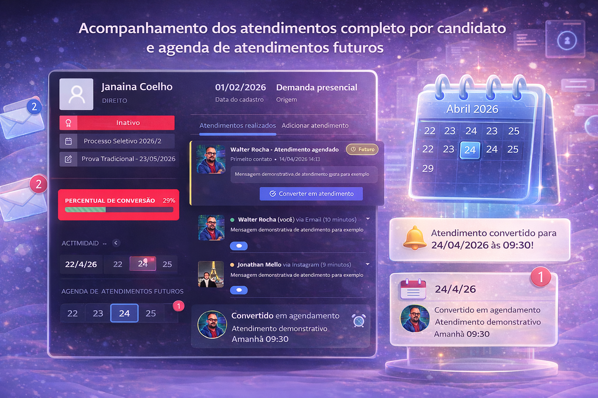

Integre captação, atendimento e comunicação interna em uma única plataforma. Com o suporte de tecnologia, consultoria e treinamento especializados, sua instituição alcança maior eficiência operacional, inteligência estratégica e resultados sustentáveis.
A ZARYN é especializada em IES (Instituições de Ensino Superior), com aderência para operações educacionais técnicas e profissionalizantes.


Candidatos sem resposta rápida desistem e vão para a concorrência
Informações espalhadas em múltiplos sistemas geram retrabalho constante
Falta de visibilidade sobre o funil impede ações estratégicas
Decisões baseadas em feeling, não em dados reais
Chat, agenda e CRM integrados. Zero leads perdidos.
Histórico, status e próximos passos sempre visíveis para toda a equipe.
Dashboard com métricas de captação, conversão e performance individual.
Visibilidade total do funil para ações estratégicas certeiras.
Plataformas SaaS para estruturar processos institucionais com foco em resultado.
Gestão de Captação e Processo Seletivo
O ZARYN Captação é uma plataforma desenvolvida para estruturar e acompanhar toda a jornada do candidato, desde o primeiro contato até a matrícula.
Principais funcionalidades:
Benefícios:
O ZARYN Captação transforma a captação de alunos em um processo estruturado, orientado por dados e resultados.
Gestão de Eventos e Espaços Institucionais
O ZARYN Eventos centraliza a organização das atividades institucionais, permitindo a gestão eficiente de eventos e da utilização dos espaços físicos do campus.
Principais funcionalidades:
Benefícios:
O ZARYN Eventos transforma a gestão de eventos em uma operação organizada, integrada e estratégica.
Desenvolvimento de Sistemas Institucionais Personalizados
O ZARYN Sistemas sob demanda cria soluções digitais sob medida para organizar processos específicos da instituição, integrando operação, dados e equipes em fluxos mais claros e eficientes.
Principais funcionalidades:
Benefícios:
O ZARYN Sistemas sob demanda transforma processos internos em plataformas digitais úteis, simples de operar e preparadas para crescer.
Não é apenas mais um chat. É o centro de comando da sua equipe comercial.
Tudo no mesmo fluxo, sem trocar de ferramenta
Crie equipes, mencione colegas e mantenha todos alinhados
Histórico completo, status atual e próximas ações sempre visíveis
Atenda mais candidatos em menos tempo, sem perder qualidade
Porque unimos tecnologia, estratégia e implantação assistida com especialização no setor educacional.
Soluções desenhadas para a realidade de instituições de ensino.
Com consultoria, treinamento e acompanhamento contínuo.
Eficiência operacional, escalabilidade e tomada de decisão orientada por dados.
Tecnologia com suporte estratégico para gerar eficiência institucional contínua.
Oferecemos soluções estratégicas para otimizar a gestão e os processos institucionais.
Capacitamos profissionais para maximizar o desempenho institucional.
Acompanhamento contínuo para garantir o sucesso da implementação.
A ZARYN Educação nasceu com o propósito de transformar a gestão das instituições de ensino por meio da tecnologia, da estratégia e da inovação.
Somos uma empresa SaaS especializada no setor educacional, dedicada ao desenvolvimento de soluções que integram sistemas, processos e pessoas, promovendo eficiência, organização e crescimento sustentável.
Transformar a gestão educacional por meio de soluções tecnológicas e estratégicas inovadoras.
Ser referência nacional em soluções SaaS para o setor educacional.
Agende uma demonstração personalizada e veja a Zaryn em ação. Sem compromisso, sem complicação.
Tudo que você precisa saber sobre a Zaryn
A implementação básica pode ser feita em até 7 dias úteis. Isso inclui configuração inicial, importação de base, treinamento da equipe e início da operação. Projetos mais complexos podem levar de 2 a 4 semanas.
Sim! Oferecemos treinamento completo para todos os usuários, incluindo sessões ao vivo, material de apoio em vídeo e documentação detalhada. Além disso, nosso suporte está sempre disponível para tirar dúvidas.
Todos os dados são armazenados em servidores seguros com criptografia de ponta a ponta. Seguimos as normas da LGPD e realizamos backups automáticos diários. Você tem total controle sobre quem acessa cada informação.
Sim! A Zaryn foi desenvolvida para operar com múltiplas unidades, permitindo visão consolidada e gestão individual por unidade. Cada unidade pode ter seus próprios usuários, permissões e indicadores específicos.
Sim, nosso time de suporte está disponível por chat, email e telefone em horário comercial. Para clientes premium, oferecemos atendimento prioritário e suporte estendido.
Sim! A Zaryn possui APIs para integração com sistemas de gestão acadêmica, CRMs, ferramentas de email marketing e plataformas de pagamento. Consulte nosso time sobre integrações específicas.
Sim! O sistema permite importação via planilha Excel com validação automática. Você recebe um relatório completo de registros inseridos e atualizados, mantendo todo o histórico preservado.
Muitos clientes reportam melhorias imediatas na organização e comunicação da equipe. Resultados mensuráveis em conversão e velocidade de atendimento costumam aparecer nas primeiras 2 a 4 semanas de uso.
Entre em contato para conhecer as soluções ZARYN e receber um diagnóstico inicial da sua operação.